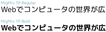

M+ と IPAフォントの合成フォント
M+ (エムプラス)というフリーで高品質な日本語フォントがあります。 ひらがな・カタカナはあるのですが、漢字はありません。
そこで、同じくフリーな IPAフォント (どちらも改変・再配布が許可されています！) の漢字と組み合わせた合成フォントをここで配布しています。
2012-10-30 注
このページで紹介しているのは、旧IPAフォントを使用した、過去のバージョンです。
どんな違いがあるか、表にまとめてみました。
| 項目 | 新バージョン MigMix等 |
旧バージョン M+1P+IPAG circle等 |
||
|---|---|---|---|---|
| 太字（ボールド体）の有無 | あり。一つのzipファイルにRegularとBoldを同梱している。  |
なし。 | ||
| 縦書き対応 |
|
非対応。 | ||
| 漢字のデザイン | 日常的な漢字の多くはM+の漢字を使用。カナと漢字のデザインがマッチしている。 | 漢字はすべてIPAフォントから取り込んでいる。カナと漢字のマッチングが多少劣る。 | ||
| 収録文字数 | JIS第1・第2水準に加えて第3・第4水準まで収録。約11000文字。 | JIS第1・第2水準まで収録。約7000文字。 | ||
| 行間 | 外国の文字に行を飛び出すものがあるため、行間が広くなっている。Migu 1M/2Mだけは旧バージョンとほぼ同じように狭くしてある。 | 行間は狭い。（行間がせまいと、読みにくいという欠点もあるが、同じ面積でより多くの行を表示できるという利点もある） | ||
| 等幅の半角英数文字 | 等幅フォントがM+に用意されたので、それを使用。 | 等幅フォントがなかったため、別のフォントと組み合わせていた。 | ||
| IPAフォントのライセンス | ライセンス制限がゆるくなり、なおかつ細かいところまでライセンスが整備されたので、使いやすい。2012年6月にはIPA（情報処理推進機構）に、ライセンスの扱いが適切であると認められた。 | ライセンス制限が厳しかったので、フォントファイルだけ配布することもできなかった。細かい点があいまいで使いにくい。 |
更新情報
2008-05-18
雑誌『Software Design 2008年6月号』の第2特集「PC UNIXフォント最新事情」でこのページが取り上げられました。
このページで配布中の「M+とIPAフォントの合成フォント TrueType版」のフォント設定が特別詳しく書かれているので、LinuxやBSDで使うかたは、参考にしてみてください。
2007-06-27
「M+とIPAフォントの合成フォント」TrueType版をアップデートしました。M+と関係のない「IPAフォント」5ファイルのみの修正です。
詳しくは掲示板をご覧ください。
2007-03-17
雑誌『Software Design 2007年4月号』の「Regret活用のポイント〜1CD Linuxでデジタルミュージック制作」という記事で、このページが取り上げられました。
Regret Linuxという日本人の方が作成しているLinuxディストリビューションにここの「M+とIPAフォントの合成フォント」が使われているという理由で、このページの URLが載っていました。
2006-06-21
Windows Vista Beta2 では TrueType表示がどう変わったか、調べてみました。
2006-05-20
TrueType版・OpenType版ともに、アップデートしました。くわしくは変更点をご覧ください。
OpenType版のページを作りました。
2006-05-08
OpenType 形式に変換したフォントを、ためしに作ってみました。